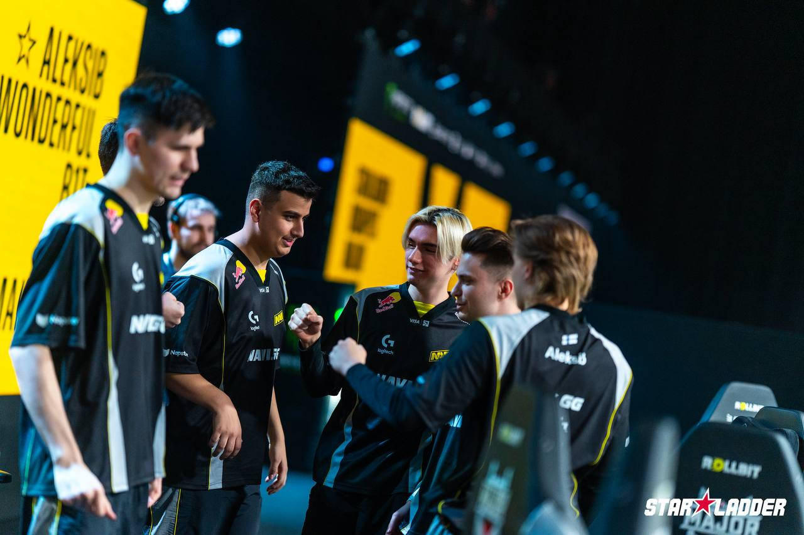

CS2 Roster NAVI
У жовтні 2009 року, коли комп'ютерний спорт стрімко набував популярності й неухильно зростала кількість чемпіонатів із великими призовими, меценат із Казахстану Мурат «Arbalet» Жумашевич на турнірі Intel Extreme Masters в Дубаї озвучив ідею створення кіберспортивної організації. Arbalet поставив собі за мету заснувати професійну команду, для якої він стане головним спонсором: надасть гравцям майданчик для тренувань і візьме на себе фінансові питання, починаючи із зарплат і закінчуючи оплатою перельоті в. Першим на пропозицію відгукнувся starix — саме перед цим відомим гравцем з Counter-Strike було поставлено завдання сформувати зіркову п'ятірку. 17 грудня 2009 року навколо команди з Counter-Strike почалося будівництво кіберспортивної організації Natus Vincere (з лат. — «народжені перемагати»). Спочатку назва NAVI була запозичена з фільму «Аватар», а свого остаточного вигляду набула після конкурсу на кращу розшифровку абревіатури, проведеного серед фанатів. До першого складу NAVI увійшли Edward, markeloff, starix, ceh9 і Zeus, а менеджером став ZeroGravity. Всі гравці виділялися високою індивідуальною майстерністю і мали великий досвід турнірних виступів.
Склад команди
- iM
- b1t
- Aleksib
- w0nderful
- makazze